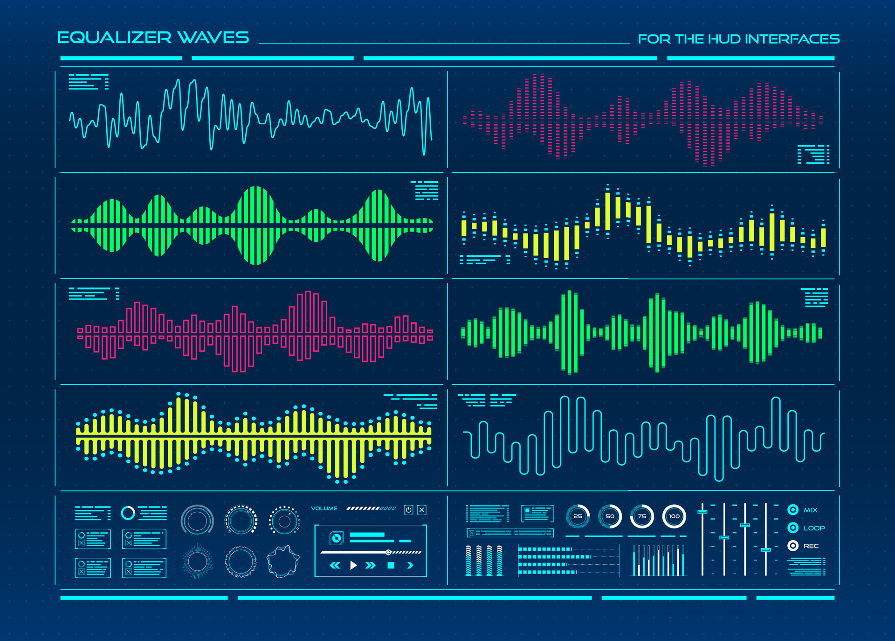

Stel je voor dat je een tekening maakt met vormen zoals cirkels, lijnen en vierkanten. Dat is een beetje zoals een vectorafbeelding. Deze plaatjes zijn gemaakt van vormen, en ze blijven altijd scherp, hoe groot of klein je ze ook maakt. Dus als je het plaatje heel groot maakt, blijft het er mooi uitzien zonder wazig te worden. Vectorafbeeldingen zijn handig voor logo's of tekeningen die je groter of kleiner wilt maken zonder dat ze er lelijk uitzien.
Een bitmapafbeelding is als een kleurboek met al zijn kleine vakjes. Elke doos heeft een kleur, die samen een foto-achtig beeld creëren. Als u de bitmapafbeelding echter erg groot maakt, verschijnen er kaders en wordt de afbeelding een beetje wazig. Dit soort afbeeldingen zijn goed voor foto's, maar niet zo geweldig als je wilt dat de afbeeldingen erg groot zijn.
Wanneer gebruik je welke? Gebruik vectorafbeeldingen als je tekeningen of logo's maakt die je wilt vergroten of verkleinen. Gebruik bitmapafbeeldingen voor foto's of plaatjes met veel details en kleuren.

Hoe geluid wordt gedigitaliseerd: Geluid, zoals muziek of stemmen, is eigenlijk lucht die trilt. Maar de computer kan dat niet zo begrijpen, dus we moeten geluid digitaal maken, zodat de computer het kan opslaan en afspelen. Samplen: Om geluid in de computer te krijgen, neemt de computer heel snel achter elkaar kleine stukjes van het geluid op. Dit noemen we samplen. Het is een beetje alsof je met een camera heel veel foto's maakt van het geluid. Al die kleine stukjes plakken we aan elkaar om het geluid te maken. Sample rate: De sample rate is hoe vaak de computer per seconde een stukje van het geluid opneemt. Hoe vaker de computer dat doet, hoe beter het geluid klinkt. Stel je voor dat je 44.000 keer per seconde zo'n stukje geluid opneemt, dat is een veelgebruikte sample rate. Waarom is dit belangrijk? Als we het geluid goed en mooi willen laten klinken, moeten we ervoor zorgen dat we vaak genoeg samplen (hoge sample rate), maar niet té vaak, want dat kost veel ruimte op de computer! Dus, nu weet je het verschil tussen de twee soorten plaatjes en hoe de computer geluid digitaal maakt!
